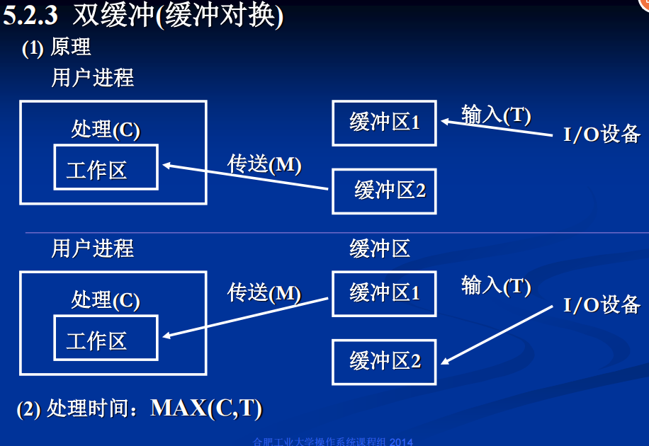
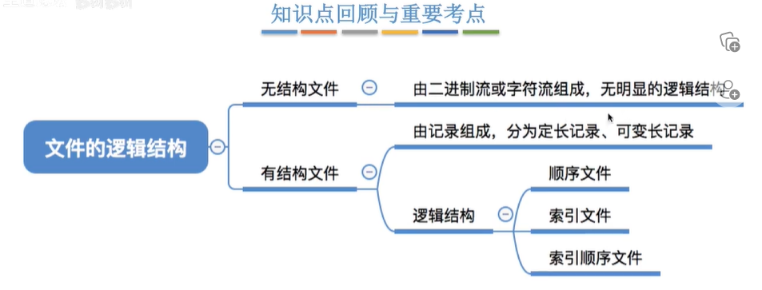
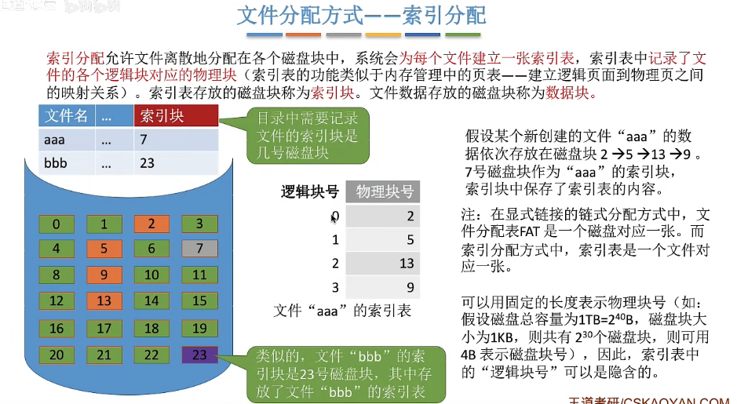
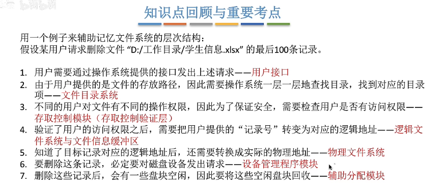

[toc]
第一章 操作系统概述

第二章 进程管理

第三章 进程调度与死锁

第四章 内存管理

第五章 设备管理
IO系统
按速率分类：低速设备、中速设备、告诉设备
按信息交换单位分类：字符设备、块设备
IO系统结构：
-
单通路IO系统：无冗余设备，容错性差
-
多通路IO系统：有冗余设备，容错性好
设备控制器
IO控制方式：
DMA方式：
-
数据的传送单位是块 -
数据传输的开始和结束时，才需要CPU干预
-
优点：CPU介入频率降低，数据传输不需要在经过CPU写入内存,数据的传输速率进一步提神，CPU与IO的并行性得到了增加
-
缺点：CPU每发送一条指令只能读写一个或者多个连续的数据块。对离散数据的读写不太友好。
通道控制方式
-
IO通道目的：使原来由CPU处理的IO任务转由通道来承担没从而把CPU从繁杂的IO任务中解脱出来。
-
IO通道是一种特殊的处理器
-
一般只有数据传送指令、设备控制指令等
-
通道没有自己的内存，通道执行的程序（通道程序）是存放在内存中的，他与IO共享内存
缓冲管理
引入缓存的原因：
-
缓和CPU和IO设备的矛盾
-
减少CPU中断的频率
-
提高CPU和IO设备的并行性
-
解决数据粒度不匹配的问题
单缓冲
双缓冲

-
循环缓冲区

缓冲池
设备分配
-
安全分配：进程得到资源就阻塞，一个进程只能占用设备
-
不安全分配：并行分配，一个进程可以同时得到多个设备资源
设备独立性：
-
定义：用户程序独立于具体使用的物理设备
假脱机技术：SPOOLing技术
-
SPOOLing技术可以将一台物理设备虚拟成逻辑上的多台设备，可将独占是设备改造成共享设备。
-
SPOOLing技术的特点：
提高IO速度
改造独占设备为共享设备
实现虚拟设备
磁盘存储管理
-
每个扇区就是一个磁盘块（扇区面积不一样但是存储数据的大小是一样的）
-
（柱面号，盘面号，扇区号）就可以表示一个物理位置
磁盘调度算法
-
先来先服务算法 （FCFS）
-
最短寻找时间优先算法（SSTF）
-
扫描算法（SCAN）：会产生饥饿现象，磁臂粘着现象（在一小段区间来回摆动）
-
循环扫描算法（C-SCAN）
第六章 文件系统
初识文件系统
文件的属性
-
文件名
-
标识符：一个系统内的标识符唯一
-
类型
-
位置：文件的路径
-
大小、创建时间、上次修改的时间
-
文件所有者信息
-
保护信息：对文件进行保护的访问控制信息
文件之间是怎样组织起来的
-
以树的形式组织起来的
操作系统应该向上提供哪些共功能：
-
创建文件：create
-
读文件：read
-
写文件：write
-
删除文件：delete
-
打开文件：open
-
关闭文件：close
文件的逻辑结构
文件的逻辑结构
-
无结构文件：文件内部就是一系列二进制流或字符流组成，又称流式文件。
-
有结构文件：顺序文件、索引文件、索引顺序文件。
- 有一组相似的记录组成，又称记录式文件‘
- 根据各条记录的长度分为：定长记录，可变长记录
顺序文件
-
文件中的记录是一个接着一个顺序排列的（逻辑上），记录是可变长的或者定长的，记录在物理上可以
顺序存储或者链式存储

定长记录的顺序文件物理上采用顺序存储是可以实现随机存取的，如果能保证记录的顺序结构，则可以实现快速检索
索引文件
-
利用索引表（索引表本身就是一个定长记录的顺序文件），对每一个记录创建一个索引表项。
索引顺序文件
-
索引顺序文件是索引文件和顺序文件思想的结合，索引顺序文件中，同样会为文件建立一张索引表，不同的是。并不是每个记录对应一个索引表项，而是
一组记录对应一个索引表项

文件目录
目录文件中的每一条记录就是一个文件控制块（FCB），文件控制块的有限集合，就构成了目录。
对目录进行哪些操作：
-
搜索
-
创建文件
-
删除文件
-
显示文件
-
修改目录
目录结构–单级目录结构
-
按名存取，不允许文件重名
-
不适用于多用户操作系统
目录结构–两级目录结构
-
分为主文件目录和用户文件目录
-
允许不同用户的文件重名
目录结构–多级目录结构，又名树形目录结构
-
从根目录出发的路径称为绝对路径
-
从当前目录出发的叫相对路径
-
树形目录结构不方便实现文件共享
目录结构–无环图目录结构
-
在树形结构的基础上，增加一些指向同一节点有向边，使整个目录成为有向无环图
文件的物理结构（文件的分配方式）
文件块和磁盘块
-
文件的逻辑地址空间被分为一个一个的文件块
-
用户用逻辑地址来访问文件，操作系统实现逻辑地址到物理地址的映射。
-
逻辑块号映射为物理块号
文件分配方式–连续分配
-
连续分配方式要求每个文件在磁盘上占有一组连续的块
-
支持顺序访问和直接访问– 优点
-
连续分配要求每个文件在磁盘上占有一组连续的块
-
连续分配的文件在顺序读写时速度最快 – 优点
-
物理上连续分配的文件不方便拓展 – 缺点
-
物理上采用连续分配存储空间利用率低，会产生难以利用的磁盘碎片 – 缺点
文件分配方式–链式分配 默认是显示链接
-
隐式链接（目录中记录文件的起始块号和结束块号）：只支持顺序访问，不支持随机访问，方便拓展文件。不会产生磁盘碎片
-
显示链接：物理块号可以是隐含的
-
显示链接逻辑块号转换为物理块号的过程不需要读磁盘操作
-
支持顺序访问也支持随机访问，不会产生外部碎片，可以很方便的对文件进行拓展。
文件分配方式–索引分配

-
逻辑块号到物理块号的映射
-
支持随机访问，文件拓展也很容易实现，索引表需要占用一定的空间。
-
当文件的大小过大，会导致一个磁盘块存不下该文件的索引表，那么我们该怎么解决这样的问题？
-
链接方案：低效。
-
多层索引：多层索引文件的最大长度问题
-
若采用K层索引结构，且顶级索引表项未调入内存，那么需要K+1次磁盘操作
-
多层索引对小的文件索引不友好
-
混合索引：
-
文件分配方式总结：
文件存储空间管理
存储空间的划分与初始化
-
存储空间的划分：将物理磁盘划分一个个文件卷（逻辑卷、逻辑盘）如：C、D盘
-
每一个文件卷划分为：目录区（存放文件目录信息（FCB））和文件区（文件数据）
存储空间管理 – 空闲表法
-
回收时注意表项的合并问题
-
可以采用首次适应，最佳适应，最坏适应算法来决定为文件分配哪个空间。
存储空间管理–空闲链表法
-
空闲盘块链的分配与回收
操作系统保存着链头和链尾指针
分配：若某个文件申请K个磁盘，则从链头开始依次摘下K个磁盘分配，并修改空间链的链头指针
回收：回收盘块一次挂到链尾，并修改链尾。
-
空闲盘区链的分与回收
存储空间管理–位示图法
存储空间管理 – 成组链接法
-
空闲表法和空闲链表法不适合用于大型的文件系统
-
Unix采用成组链接法
-
文件卷的目录区中会专门用一个磁盘块作为
超级块，系统启动需要将超级块读入目录。
数据一致性控制
事物机制
事物的定义：一系列数据相关项的读写操作
文件的基本操作
打开文件
文件共享

文件保护
文件系统的层次结构

第七章 操作系统接口
系统调用的基本概念
-
用户在程序中调用操作系统所提供的一些子功能。通常也把被调用的操作系统功能，称为系统调用。